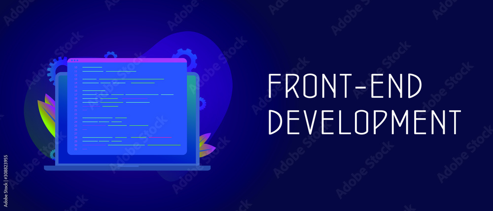

O que é front-end?
O Front-end está muito relacionado com a interface gráfica do projeto. Ou seja, é onde se desenvolve a aplicação com a qual o usuário irá interagir diretamente, seja em softwares, sites, aplicativos, etc.

O que faz um profissional de front-end
Um desenvolvedor front-end é o profissional responsável por criar a interface de utilização de um site ou aplicação web. A camada visual das aplicações web, na qual os usuários interagem
O que estuda em front-end?
Quem trabalha com Front End é responsável por desenvolver por meio do código uma interface gráfica e, normalmente, com as tecnologias base da Web: HTML, CSS e JavaScript.